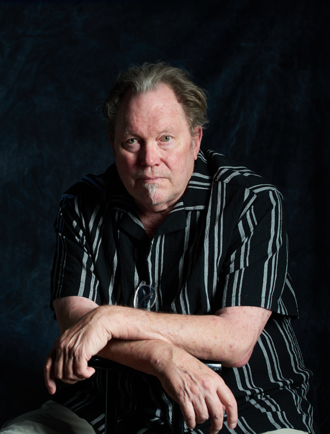
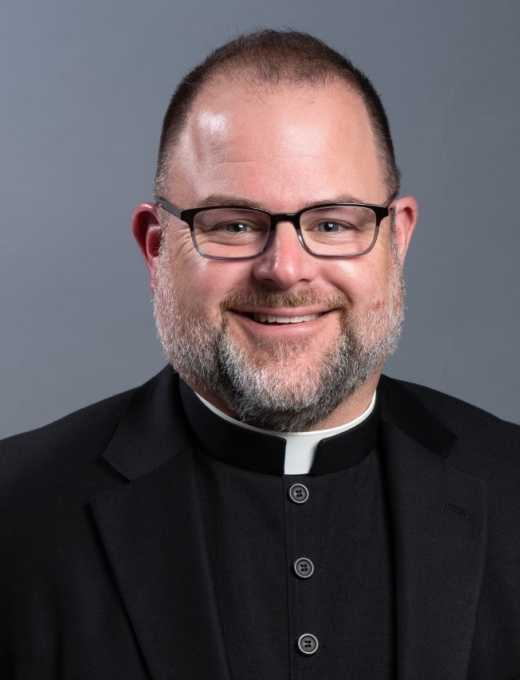

Join us for our 15th Annual McHenry County Catholic Prayer Breakfast!

2026 - First Speaker
It’s Chicago in the 1980s and ‘90s, and Kevin Matthews has it all as one of the nation’s most recognized on-air radio personalities. He’s partying with celebrities, rubbing shoulders with famous athletes, and the world is at his fingertips. Then everything changes - he’s diagnosed with a debilitating illness and the spotlight gradually slips away.
At the height of his anguish, he stumbles upon a broken statue of the Virgin Mary, and his life takes an unexpected turn. In this moment of spiritual awakening, Kevin finds his true purpose and calling, discovering what matters most. Calling himself “Mary’s Roadie,” he offers his fans something deeper: inspiration and hope.
Learn more about Kevin Matthews' Story – brokenmary.com

2026 - Second Speaker
Recently honored with the title Monsignor by Pope Leo XIV, Monsignor Fuller is a priest of the Diocese of Rockford, ordained by Bishop Thomas G. Doran in 1997. He has served the U.S. bishops for the last decade in a variety of roles at the Conference, beginning in 2016 as the head of the Secretariat for Doctrine and Canonical Affairs, and then in the offices of the General Secretariat since 2021.
Monsignor Fuller holds a doctorate in sacred theology, a master of divinity, a licentiate of sacred theology and a bachelor of sacred theology from the University of St. Mary of the Lake/Mundelein Seminary. Prior to entering seminary formation, Monsignor Fuller spent two years in Swaziland, Africa, as a Peace Corps volunteer. He has written extensively in numerous scholarly publications and is the author of two books: Daily Prayer 2008 and The Virgin Martyrs: A Hagiographical and Mystagogical Interpretation.
This bio was sourced from this press release. Click to read the full text.